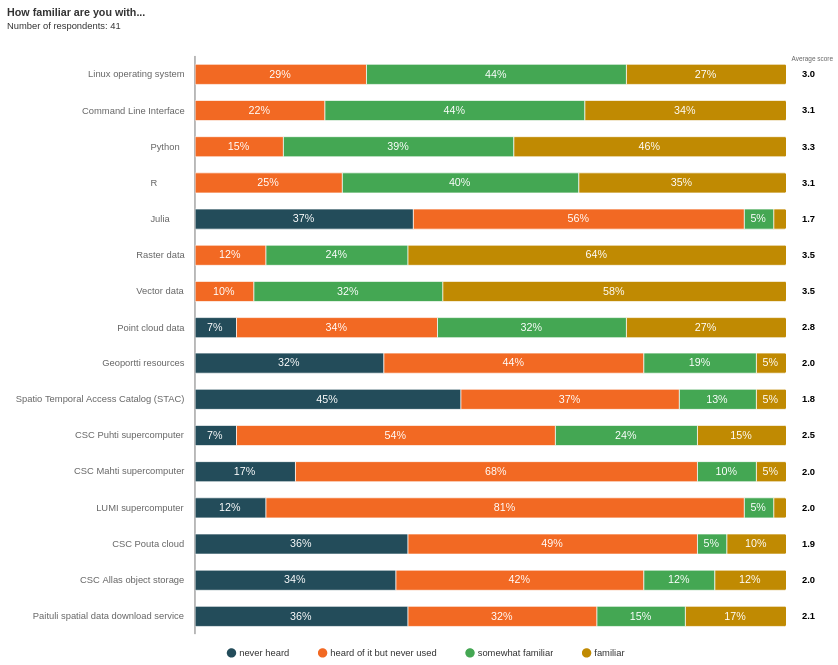
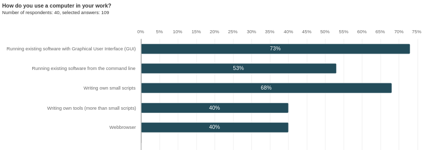

Practicalities#
New materials#
This is a new way for us to give this course, please excuse any small inconsistencies etc and give us feedback on how this works for you.
CSC account#
All hands-on activities of this course can be carried out with CSC’s supercomputer Puhti’s webinterface, which you can access via your favorite webbrowser. For this, you do not need any additional software installed on your own computer.
For using Puhti, a CSC account is needed.
You will also need to have access to a CSC project. For the course version, we will use a course project (project_2008648) provided by CSC which you got access to by providing your username to us through the pre course survey. If you haven’t done so, please share your CSC username in the collaborative document. The course project will also give you access to a resource reservation (on Thursday: geocomputing_thu , on Friday: geocomputing_fri).
Let’s all check now at https://my.csc.fi that you see the course project, and have accepted the terms and conditions of Puhti and Allas. We will need this later.
Course format#
Hybrid course with lecture and hands-on exercises. It is recommended for online participants to have an extra screen available, to be able to follow the meeting, as well as the lecture materials and the Puhti webinterface. All questions should go to the collaborative document. This ensures fair chance for everyone to ask questions, and also to archive Q&A for everyone. During the exercise sessions we will in addition make use of red/green sticky notes on site and the “raise hand” feature in Zoom, if you run into trouble that needs immediate support.
Course participant statistics#
Familiarity#
{kind=link}

Familiarity of course participants 2023 with different topics related to this course#
Computer use#
{kind=link}

Computer usage of course participants 2023#
Expectations#
Course participant of 2023 answers summarized and categorized:
We will learn about …#
All of the topics: Using Raster data, Vector data, Point cloud data,Geoportti resources, and Spatio Temporal Access Catalog (STAC) training on : CSC Puhti supercomputer, CSC Mahti supercomputer, LUMI supercomputer, CSC Pouta cloud
Getting an insight into the supercomputing environment to have an idea how my research project could benefit
Big raster/vector data GIS-analytics / Working with Spatial Big Data
Efficient R scripting in CSC Puhti for geospatial data
CSC general stuff, what things are there, how to use
GIS/spatial possibilities with csc computers
To improve my knowledge of spatial data processing
Parallelization, high throughput
Use of QGIS and other pre-installed GIS-software via the Puhti webinterface
I am most interested to learn about how to flexibly customize the bash (*.sh) script for running array jobs and parallel computing in R through Puhti’s compute node shell.
Working with supercomputers / Enchance my skills about supercomputer
Working with Allas
Adapting own scripts to the supercomputer
How to run own software in CSC supercomputer.
We will mention …#
Using Geoportti and Paituli more efficiently
Puhti configuration
Using virtual rasters
Setting up processing chains and running them on CSC services
Learn how to use more computer tools and try to find its connction with geography.
Processing point cloud data in Supercomputers
Not part of this course#
I want to learn about using Vector data such as different raster layer population density, rivers, and elevation and make this data resolution and projection comparable with the Climate model data sets.
spatial econometrics
How to use CSC for running deep learning for big raster data?
Data Visualization
Introduction and working with Taito. (Taito was the predecessor of Puhti :) )
Python or R#
75% of course participants (of 2023 edition) are more interested in learning how to use Python on supercomputer than R.
Information overload#
Depending on how you work with a computer, this course may bring you a lot of new information at once. Please do not get discouraged. This material will be available also after the course for your review. The best way to understand the concepts better is to start implementing your own work and ask for help when you have questions.
Starting point#
There is much more to a supercomputer and the proper use of its resources than this course covers. If this got you interested, please check out our CSC training calendar for more advanced courses.
Code of Conduct#
We strive to follow the Contributor Covenant Code of Conduct to foster an inclusive and welcoming environment for everyone.
In short:
Use welcoming and inclusive language
Be respectful of different viewpoints and experiences
Gracefully accept constructive criticism
Focus on what is best for the community
Show courtesy and respect towards other community members
Contact details to report CoC violations: katri.tegel@csc.fi
Furthermore, as this is a hands-on, interactive workshop:
Be kind to each other and help each other as best you can.
If you can’t help someone or there is some problem, let someone know.
Finally, if you notice something that prevents you from learning as well as you can, let us know and don’t suffer silently, even the “little things”:
Volume too low?
Font size too small?
Generally confusing instructor?
Not enough breaks?
This CoC text is provided by ENCCS instructor training.